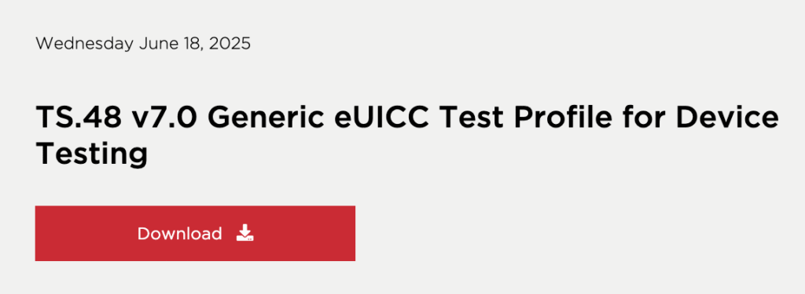
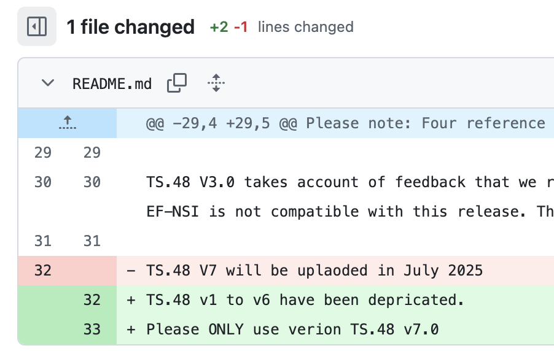

eSIM Alert: GSMA Shuts Down All TS.48 Test Profiles
Disclosure Notice: If you are a researcher and find any vulnerability in GSMA standards, you are encouraged to report it responsibly through their CVD program.
The GSMA published TS.48 v7.0 this week, with an official (future) release date of July 1st.

As part of this v7.0 release, all previous versions (v1 to v6) of the generic eSIM TS.48 Test Profile have been explicitly deprecated. GSMA has also removed all previous TS.48 profile versions from their public GitHub repository, suggesting some security vulnerability on the previous versions (especially because the v7.0 updates are exclusively security-related changes):

These eSIM Test Profiles are widely used for conformance testing, device certification, and any connection to a test callbox (R&S, Anritsu, Keysight, etc.).
The changes were approved during GSMA TSG #60, held from 10 to 13 June 2025 in Stavanger, Norway. The editors of the change request addressing the security vulnerability (CR1010 v13) are: Apple, Comprion, Dell, Kigen, Qualcomm, Thales, and GSMA. More details on CR1010 v13 are not available yet. But we can have some information from the TS.48 v7 itself.
Changes introduced in TS.48 v7.0:
- Introduction of Certified and Test eUICCs
- Certified eUICC: Must meet GSMA Remote SIM Provisioning compliance (as per SGP.24).
- Test eUICC: Specifically configured for testing (as per SGP.23/33), using test PKI certificates and test EIDs.
- RAM (Remote Application Management) is now forbidden in Test Profiles used within Certified eUICCs for Use Cases B and C:
- Use Case B: Production line sampling/testing
- Use Case C: After-sales testing
- Restriction on publicly known ADM codes for Certified eUICCs:
- Probably intended to block unauthorized access to sensitive profile management operations.
- New guidelines for test applet capabilities have also been introduced.
According to GSMA, more information on TSG #60 (and hopefully on CR1010 v13) will be made available soon. For those updates and their official documentation, refer to the GSMA TSG #60 page.
Disclaimer: This post is based solely on publicly available information. It does not disclose any confidential information and does not represent any organization I'm affiliated with.